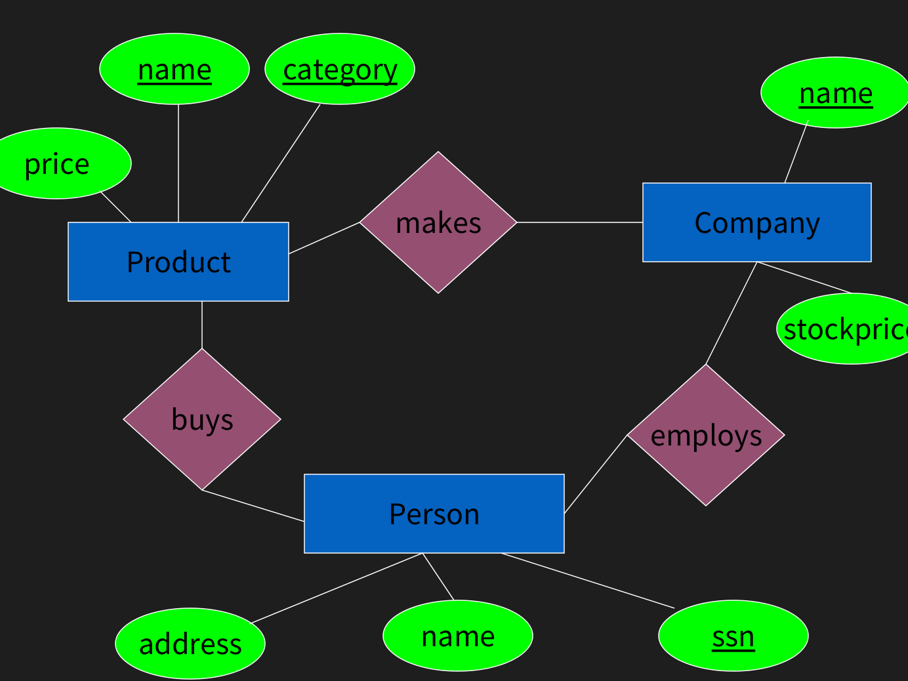
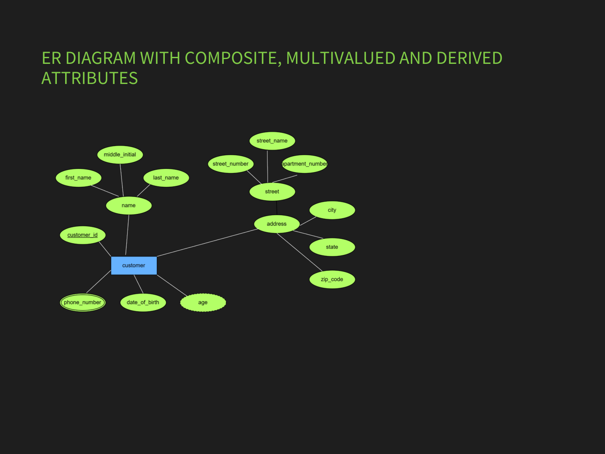
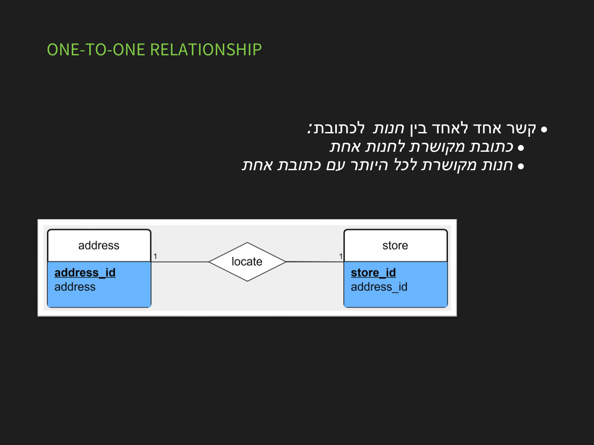
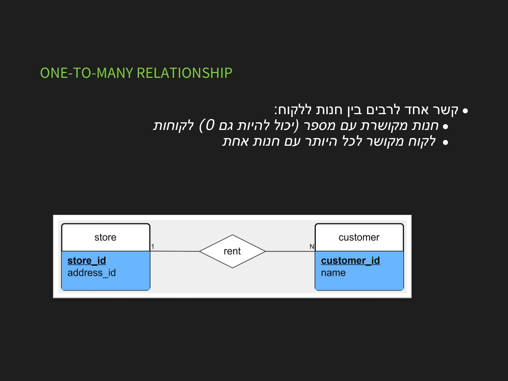
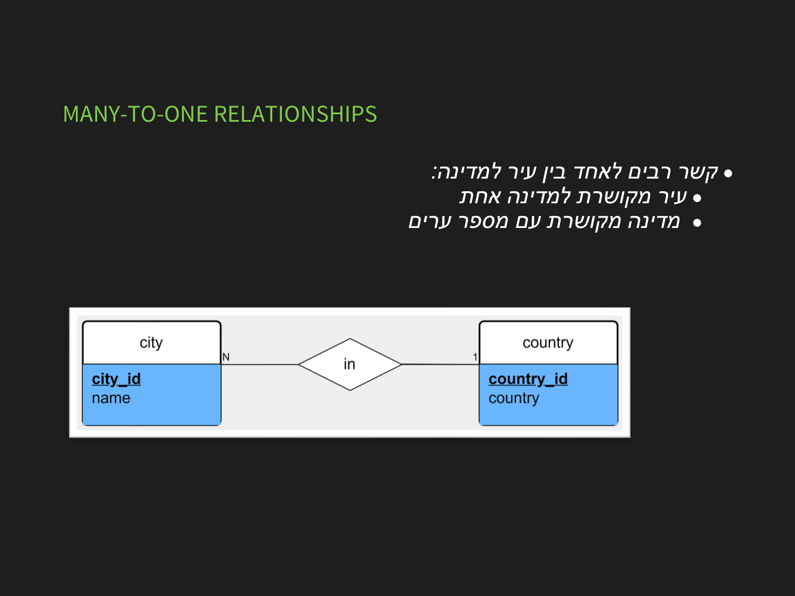
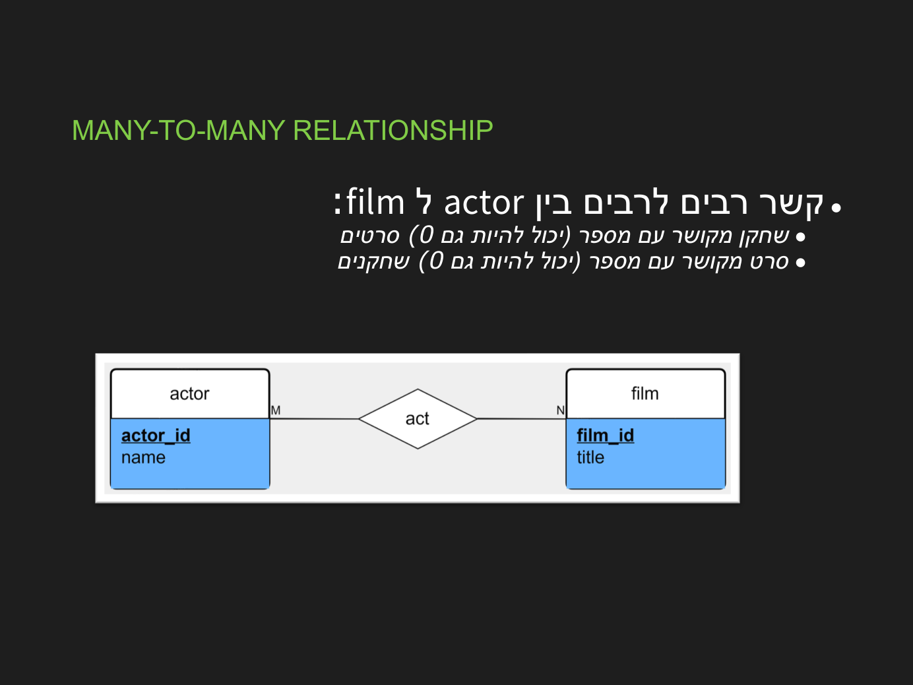

מידול ER ודיאגרמות
⏱ זמן משוער: 40 דק'
ישויות, תכונות וקשרים
מידול ER (Entity-Relationship) הוא שלב העיצוב הרעיוני. ישות (Entity) = «דבר» בעולם (עובד, מחלקה). תכונה (Attribute) = מאפיין של ישות (שם, שכר). קשר (Relationship) = חיבור בין ישויות (עובד «שייך ל» מחלקה). בדיאגרמה: ישות = מלבן, תכונה = אליפסה, קשר = מעוין.

מקור: database_design.pdf
סוגי תכונות
- פשוטה מול מורכבת: שם מלא = שם פרטי + משפחה.
- חד-ערכית מול רב-ערכית: מספר טלפון יחיד מול כמה טלפונים.
- נגזרת (derived): גיל מחושב מתאריך לידה.
- תכונת מפתח: מזהה ישות ביחידות (מסומנת בקו תחתון).

מקור: database_design.pdf
קרדינליות (Cardinality)
הקרדינליות מתארת כמה ישויות מכל צד משתתפות בקשר:
- 1:1 — לכל ישות בצד א׳ לכל היותר אחת בצד ב׳ (עובד↔כרטיס עובד).
- 1:N — לישות אחת בצד א׳ כמה בצד ב׳ (מחלקה↔עובדים).
- N:M — רבים לרבים (סטודנטים↔קורסים).
כך זה נראה במצגות הקורס (שימו לב לאותיות 1 / N / M על קו הקשר):




מקור: database_design.pdf
דרגת הקשר וקשר רקורסיבי
- דרגת הקשר (degree): רוב הקשרים הם בינאריים (בין 2 ישויות). קיימים גם קשרים בין יותר משתי ישויות (ternary) — נדירים אך אפשריים.
- קשר רקורסיבי (recursive/unary): ישות מקושרת לעצמה. הדוגמה הקלאסית — עובד «עובד תחת» מנהל (שגם הוא עובד), עם התפקידים manager ו-worker.
בהמרה למודל רלציוני, קשר רקורסיבי הופך למפתח זר המצביע על אותה טבלה: למשל employee(emp_id, name, manager_id→employee), כאשר manager_id יהיה NULL לעובד ללא מנהל.
-- קשר רקורסיבי «עובד תחת» על הנתונים:
-- emp_id | name | manager_id
-- 1 | Dana | NULL ← המנהלת, אין מעליה איש
-- 2 | Avi | 1 ← עובד תחת Dana
-- 3 | Noa | 1 ← עובדת תחת Dana
SELECT e.name AS worker, m.name AS manager
FROM employee e LEFT JOIN employee m ON e.manager_id = m.emp_id;
-- Dana | NULL, Avi | Dana, Noa | Danaמקור: database_design.pdf
ישות חלשה
השתתפות (Participation): קשר יכול להיות בהשתתפות מלאה (total) — כל מופע של הישות חייב להשתתף בקשר (כל עובד חייב מחלקה; מסומן בקו כפול לקשר), או חלקית (partial) — יש מופעים שלא משתתפים (לא לכל עובד יש תוכנית בריאות). נשתמש בזה בהמרה: ב-1:1 עדיף לשים את המפתח הזר בצד שההשתתפות שלו מלאה, כדי להימנע מ-NULL-ים.
ישות חלשה (Weak Entity) אינה יכולה להזדהות לבד — היא תלויה בישות אחרת («חזקה») לזיהוי. לדוגמה: «תלוי» (dependent) של עובד מזוהה רק בצירוף מזהה העובד + שמו. בדיאגרמה מסומנת במלבן כפול, והמפתח שלה חלקי (מפתח מבחין) בשילוב מפתח הישות החזקה. (בדיאגרמת ER: תכונה רב-ערכית = אליפסה כפולה, תכונה נגזרת = אליפסה מקווקוות.) הקשר שמחבר ישות חלשה לישות החזקה שלה נקרא קשר מזהה (identifying relationship) ומסומן במעוין כפול.
-- דוגמה: "תלוי" (בן/בת של עובד) — ישות חלשה
-- dep_name לבדו אינו ייחודי (לשני עובדים יש בן בשם Tom),
-- לכן המפתח הוא צירוף: (emp_id, dep_name)
dependent(emp_id → employee, dep_name, birth_date)
-- PK: (emp_id, dep_name)מקור: database_design.pdf
בדיקה עצמית
כיצד מיוצג קשר בדיאגרמת ER?
קשר «סטודנט לומד קורס» (סטודנט יכול בכמה קורסים, קורס עם כמה סטודנטים) הוא:
מהי תכונה נגזרת (derived)?
מהי ישות חלשה?
כיצד מסומן מפתח (מזהה) של ישות בדיאגרמת ER?
סיימתם את הפרק? סמנו אותו כהושלם: